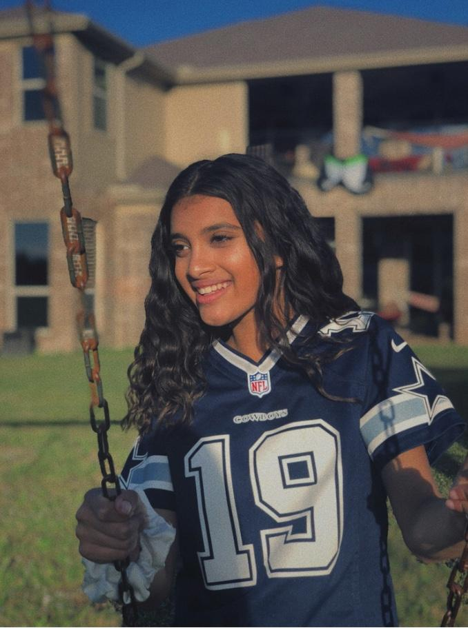
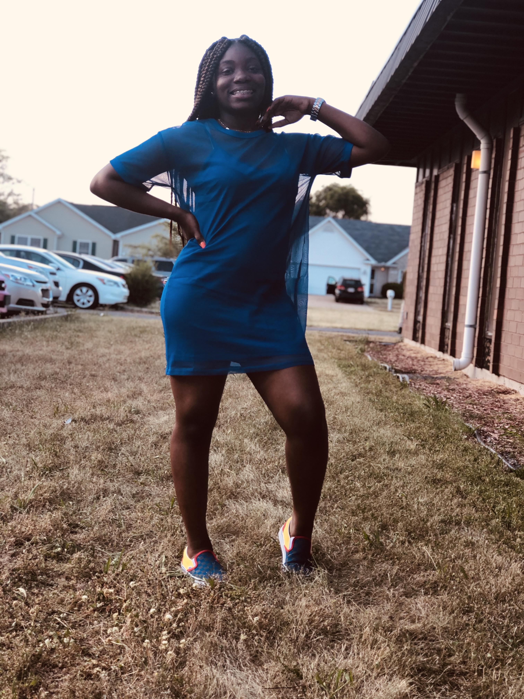

| Galilea |
I am a rising junior at Plano Academy High School who has a passion for art and technology. This program has shown me many new and exciting paths in the technology field, like UX/UI, video game designer, and volunteering with GWC.
|
Sarah  |
I am a incoming junior at Braswell High where I participate in Rotc and hospital rotation. Being in GWC has helped me discover my passion for computer science,and maybe even having a future in computer science.
|
| Abi  |
Hi my name is Abi, I’m in 11th grade at Plano East Senior High school where I take choir and a few digital media classes. I enjoy exploring new fields, and GWC has given me an opportunity to do it.
|
| Jahlynn  |
I am a incoming junior at Frisco High School. Coding is something new to me this program has showed a new things.Even though this isn't my true passion it was to try coding out.
|